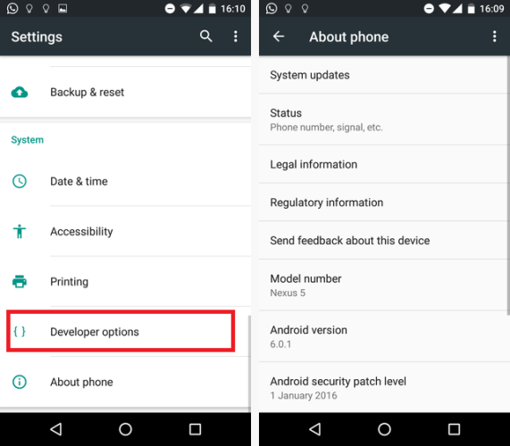
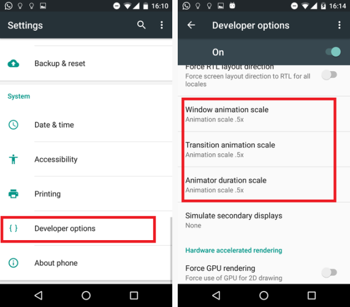

32 Android secret codes!
1. Enable Developer Mode
Ok, this is one of the more widely known tricks, but it’s important nonetheless, so we are going to include it.

One solution is to change your phone’s “Window animation scale”, “Transition animation scale” and “Animator duration scale” from 1x to 0.5x. Granted, it won’t actually make your phone faster, but it will make it feel faster.
Navigate to Settings > About phone and tap on your phone’s build number seven times. You’ll get an onscreen countdown, eventually followed by a message saying “Congratulations, you are now a developer”.
2. Change the Animation Scales
For the most part, the latest Android phones already feel very snappy.
There are also lots of popular entry-level phones that come with slower processors and only 1GB or 2GB of RAM.
>
One solution is to change your phone’s “Window animation scale”, “Transition animation scale” and “Animator duration scale” from 1x to 0.5x. Granted, it won’t actually make your phone faster, but it will make it feel faster.
Go to Settings > Developer options and scroll about two thirds of the way down the list to find the necessary options (you’ll need to have first enabled Developer Mode).
3. Clear App Defaults
It’s annoying when a link opens in a certain app rather than in the browser. It could be a YouTube link, a tweet, or a Facebook page — you’ll end up waiting around while your phone shuts down Chrome (or your browser of choice) and fires up something else.
It’s easily fixed.
Go to Settings > Apps and find the app that keeps opening. Once there, scroll down to Open by default, press it, and then select Clear Defaults.
If that doesn’t work, try doing the same with your browser app as well.
4. Locate Annoying Notifications
Do you keep getting an annoying app notification, but you’re not sure which app is causing it?
There is an easy solution — just long-press on the notification in question, and your device will tell you.
5. Manage App Notifications
Moving on one step further from the previous tip, after you’ve long-pressed the app you’ll see an information icon. Press it, and you’ll be presented with the notification settings for the app in question.
You can do things like block all its notifications, allow it to override priority mode, and make it hide private information.
6. Priority Mode
Priority mode is probably one of the most underrated and underused features on the entire operating system.
In short, it allows you to put your phone into quiet mode, but still allow some “noises” to get through. This could be calls, texts, or WhatsApps from specific contacts, notifications from certain apps, or important alerts such as alarms.
To set it up, go to Settings > Sound & Notification > Do not disturb, then select the options that you require.
It can be quickly toggled on and off from the Quick Settings menu.
7. Screen Pinning
If you have kids using your phone regularly, this is a great way to make sure they don’t accident run up huge bills or set their eyes on content that is age-inappropriate.
Firstly, you’ll need to enable the feature (oddly, it is turned off by default). Do that by going to Settings > Security and scrolling down to Screen pinning.
To pin a screen, open the app, press the Overview button (the square) and then the pin icon.
You can choose to PIN-protect the pinned screen, if you so wish.